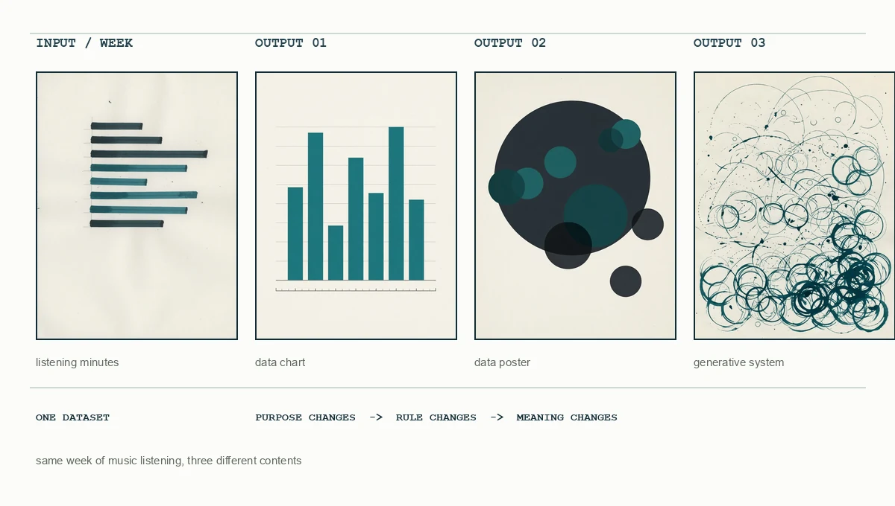
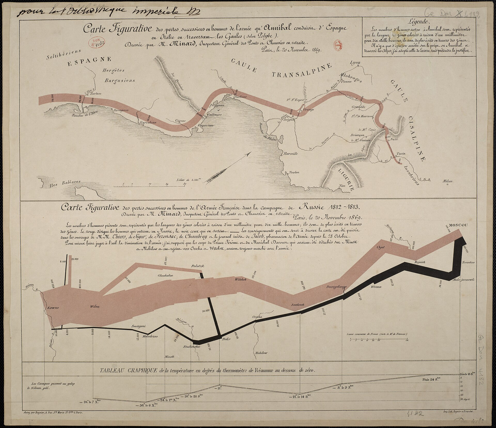

오늘의 도착점
코드를 외우는 대신 입력과 규칙이 콘텐츠로 이어지는 과정을 설명하고, 첫 코드를 직접 실행합니다.
- 이 과목에서 말하는 콘텐츠 프로그래밍을 자신의 말로 설명할 수 있습니다.
- 생성예술과 데이터 아트 사례에서 입력, 규칙, 출력을 찾아낼 수 있습니다.
- 자신의 전공과 일상에서 프로젝트로 발전시킬 데이터 후보를 세 가지 이상 찾을 수 있습니다.
- Google Colab에 접속해 새 노트북을 만들고 첫 코드를 실행할 수 있습니다.
오늘의 흐름
-
사전 진단
프로그래밍 경험과 수강 목표, 관심 매체를 개별 기록합니다.
-
강의 개요 및 운영 안내
강의 목표와 프로젝트를 확인하고 콘텐츠 프로그래밍의 구조를 이해합니다.
-
사례 분석
규칙이 그림을 만들고 데이터가 감각적 경험으로 바뀌는 사례를 살펴봅니다. 이어 같은 구조가 궤적, 흐르는 선, 공간의 빛처럼 서로 다른 매체로 표현되는 방식을 비교합니다.
-
개인 관심 분야 조사
일상과 전공에서 프로젝트로 발전시킬 개인 주제 후보를 정리합니다.
-
환경 점검
Google Colab에서 새 노트북을 만들고 첫 코드를 실행합니다.
-
수업 정리
오늘 이해한 개념과 다음 수업 전에 해결할 질문을 기록합니다.
사전 진단 및 수강 목표 확인
출발점 확인
첫 수업의 목적은 학생을 평가하는 것이 아니라 출발점을 확인하는 데 있습니다. 아래 응답은 이후 예시의 난이도와 실습 속도를 조절하고, 학생이 자신의 학습 변화를 확인하는 기준으로 사용합니다.
수강 전 진단
- 프로그래밍 경험을 0~3단계로 표시합니다. 0: 처음 접함 / 1: 예제를 실행해 봄 / 2: 예제를 수정해 봄 / 3: 작은 결과물을 혼자 만든 경험이 있음.
- 사용해 본 제작 도구를 적습니다. 예: Photoshop, Illustrator, After Effects, Blender, Unity, Excel, Processing, p5.js.
- 이번 학기에 코드로 다뤄보고 싶은 매체를 두 개 고릅니다: 이미지 / 데이터 / 텍스트 / 소리 / 움직임 / 웹.
- “수업이 끝났을 때 나는 ______을 만들 수 있으면 좋겠다”를 한 문장으로 완성합니다.
- 프로그래밍 수업에서 가장 걱정되는 점을 한 가지 적습니다.
교수자 진행
응답을 회수하거나 온라인 설문 결과를 확인한 뒤, 경험의 차이는 성취도의 차이가 아니라 출발점의 차이라는 점을 안내합니다. 반복 실행과 수정 과정을 수업의 공통 학습 방식으로 제시합니다.
강의 개요 및 핵심 개념
도입: 일상 속 데이터
수업에 참여하기 전까지의 하루를 떠올려봅니다. 알람을 끈 횟수, 이동 거리, 들은 음악, 보낸 메시지, 감정의 변화처럼 일상에는 다양한 데이터가 존재합니다. 이러한 기록은 콘텐츠 제작의 기초 자료가 될 수 있습니다.
개별 기록
오늘 아침부터 지금까지 생겼거나 관찰한 데이터 세 가지를 기록합니다. 이 단계에서는 정확한 수치보다 기록할 수 있는 대상을 찾는 일에 집중합니다.
콘텐츠 프로그래밍의 정의
콘텐츠 프로그래밍은 코드를 사용해 이미지, 텍스트, 수치, 소리 같은 재료를 변환하고 새로운 표현이나 경험으로 만드는 일입니다. 이 수업에서 코드는 정답을 맞히는 시험 과목이 아니라, 아이디어를 반복해서 실험하고 다듬을 수 있게 하는 창작 도구입니다.
숫자, 문장, 사진, 색, 소리, 개인의 기록
반복, 조건, 정렬, 무작위성, 함수, 매핑
생성 이미지, 포스터, 시각화, 텍스트와 소리 작품
예를 들어 “최근 일주일의 기분”을 입력으로 정하고, 기분이 좋을수록 원을 크게 그리고 피곤할수록 색을 어둡게 만드는 규칙을 세우면, 일주일의 상태를 보여주는 이미지가 출력됩니다. 같은 데이터라도 규칙이 달라지면 전혀 다른 콘텐츠가 됩니다.
같은 데이터, 서로 다른 콘텐츠
데이터가 결과의 형태를 자동으로 결정하지는 않습니다. 제작자는 무엇을 전달할지 먼저 정하고, 그 목적에 맞게 데이터와 시각 요소의 관계를 설계합니다. 같은 일주일의 음악 청취 시간도 아래처럼 서로 다른 결과가 될 수 있습니다.

| 결과 유형 | 주요 목적 | 제작자가 결정하는 것 |
|---|---|---|
| 데이터 시각화 | 값과 관계를 정확하게 비교 | 축, 단위, 범례, 그래프 유형 |
| 데이터 포스터 | 정보를 특정 관점과 서사로 전달 | 강조할 값, 위계, 색과 구성 |
| 생성 시스템 | 규칙이 만드는 변화와 경험을 탐색 | 행동 규칙, 매개변수, 무작위성의 범위 |
강의 내용 및 주요 결과물
| 구간 | 배우는 개념 | 만드는 결과 |
|---|---|---|
| 1~3주 | Colab, 변수, 자료형, 좌표, 픽셀, RGB | 자기소개 노트북, 기하학적 이미지 |
| 4~7주 | 반복문, 리스트, 난수, 조건문, 함수, 이미지 변형 | 패턴, 생성 이미지, 이미지 생성기 |
| 8주 | 전반부 개념의 통합 | 중간고사: 같은 규칙으로 만든 생성 포스터 여러 장 |
| 9~13주 | 데이터 수집과 정리, 시각적 매핑, 텍스트와 소리 | 데이터 포스터, 텍스트·사운드 시각화 |
| 14~16주 | 기획, 프로토타이핑, 피드백, 발표 | 기말 프로젝트: 전공·관심 기반 콘텐츠 |
주차별 수업 진행 방식
강의는 매주 3시간, 3교시로 운영합니다. 1교시와 2교시는 각각 45분 수업 뒤 15분 휴식으로 구성됩니다. 1·2교시는 이론 중심, 3교시는 실습 중심입니다.
| 교시 | 시간 | 중심 | 하는 일 |
|---|---|---|---|
| 1교시 | 45분 강의, 15분 휴식 | 이론 | 새 개념과 표현 원리를 듣고 메모합니다. |
| 2교시 | 45분 강의, 15분 휴식 | 이론 | 사례와 코드의 구조를 보고 다음 출력을 예측합니다. |
| 3교시 | 60분 | 실습 | 직접 실행하고, 값을 바꾸고, 오류를 기록하며 결과물을 완성합니다. |
이 수업에서 중요한 것
처음부터 코드를 외우거나 완벽하게 작성하는 것이 목표가 아닙니다. 실행하기 → 결과 관찰하기 → 한 가지 바꾸기 → 다시 실행하기를 반복하며 코드와 결과의 관계를 이해하는 것이 핵심입니다. 3교시 실습은 수업 중 완료를 확인하는 연습이며, 속도도 과제 점수도 아닙니다.
학습 평가
평가 비율은 강의계획서와 같습니다. 이 수업에서 중간시험과 기말시험은 지필 시험이 아니라 프로젝트로 진행합니다. 과제 20%는 E-Class에 올리는 과제 4회입니다. 출결 세부 기준과 과제 주제·기한은 E-Class 공지를 따릅니다.
| 평가 항목 | 비율 | 이 수업에서의 내용 |
|---|---|---|
| 출결 | 10% | 출석. 세부 기준은 E-Class 공지 |
| 참여도 / 태도 | 10% | 수업 중 기록, 질문, 실습 태도 |
| 중간시험 | 20% | 8주차 생성 포스터 시리즈 |
| 과제 | 20% | E-Class 과제 4회. 주제와 기한은 E-Class 공지 |
| 기말시험 | 40% | 기말 프로젝트: 전공이나 관심을 데이터와 알고리즘으로 재해석한 콘텐츠의 제작과 발표 |
매주 3교시 미션은 수업 중 화면으로 완료를 확인하는 연습입니다. E-Class에 올리지 않으며 과제 점수에 넣지 않습니다. 성적에 들어가는 과제는 E-Class의 4회입니다.
중간고사의 생성 포스터 시리즈는 보기 좋은 포스터 한 장을 만드는 과제가 아닙니다. 4~7주차에 배운 반복, 난수, 조건, 함수로 하나의 생성 규칙을 정한 뒤, 시드·도형 수·크기·색 같은 매개변수만 바꾸어 여러 장을 만듭니다. 형태는 서로 달라도 같은 규칙에서 나온 하나의 시리즈로 보여야 합니다. 사례 1에서 버튼을 누를 때마다 달라지는 결과를 여러 장의 고정된 포스터로 제작해 제출하는 과제입니다.
중간시험에서는 미적 완성도를 세분해 점수로 나누지 않습니다. 매주 3교시 실습처럼 코드가 실행되는지와 생성 규칙이 시리즈 전체에 일관되게 적용되는지를 확인합니다. 파일 형식과 자동 검사 항목은 8주차 자료를 기준으로 합니다.
| 보는 것 | 통과의 뜻 | 보지 않는 것 |
|---|---|---|
| 실행과 제출 | 노트북이 새 런타임에서 처음부터 다시 실행되고, 지정된 파일이 제출됨 | 작업 속도, 먼저 낸 순서 |
| 한 규칙, 여러 장 | 생성 규칙은 같고 매개변수만 달라 각 결과가 구별됨 | 색이 예쁜지, 구도가 세련된지 |
| 재현 | 같은 시드와 입력을 사용하면 같은 결과가 재현됨 | 우연히 한 번만 잘 나온 화면 |
| 과정 기록 | 무엇을 유지하고 무엇을 바꿨는지, 사용한 재료의 출처가 적혀 있음 | 문장의 문체, 분량 |
공식 사례로 보는 생성예술과 데이터 아트
사례 분석 기준: 입력, 규칙, 출력
코드 기반 작품은 표면적인 인상뿐 아니라 작품을 구성하는 입력, 변환 규칙, 출력의 관계를 함께 살펴보아야 합니다. 아래 세 질문은 이후의 작품 사례 분석에서도 공통 기준으로 사용합니다.
- 입력: 작가는 무엇을 재료로 사용했는가?
- 규칙: 재료를 어떤 기준으로 선택하고 변환했는가?
- 출력: 그 규칙이 어떤 형태와 의미를 만들었는가?
생성예술, 데이터 시각화, 데이터 아트의 차이
생성예술, 데이터 시각화, 데이터 아트는 서로 완전히 분리된 장르가 아닙니다. 한 작품이 두 영역에 걸칠 수 있고 목적과 강조점도 겹칠 수 있습니다. 장르를 먼저 정하기보다 무엇이 중심인지 살펴봅니다. 규칙은 어디에서 오는가? 이미 존재하는 데이터를 사용하는가? 그 데이터를 정확히 읽게 하려는가, 감각적으로 경험하게 하려는가?
앞에서 본 일주일의 음악 시간도 이 세 갈래로 갈립니다. 규칙을 발명해 패턴을 만들면 생성예술에 가깝고, 요일별 막대로 비교하면 시각화이며, 듣는 시간의 리듬을 빛이나 소리로 옮기면 데이터 아트입니다. 데이터는 같습니다. 중심이 다릅니다.
생성예술
완성된 그림을 하나씩 직접 그리는 대신 규칙과 시스템을 설계하고, 컴퓨터가 그 규칙을 반복해서 실행하게 합니다. 선의 각도나 빈칸의 위치 같은 구성 요소가 규칙에 따라 정해집니다. 비행 기록이나 날씨처럼 외부에서 수집한 데이터가 없어도 이미지를 만들 수 있습니다. 여기서 물어볼 질문은 “값 하나를 바꾸면 형태가 어떻게 달라지는가?”입니다. 4~8주차에는 반복, 난수, 조건, 함수로 이 과정을 구현합니다. 아래의 사례 1이 이에 해당합니다.
데이터 시각화
이미 존재하는 데이터를 재료로 사용합니다. 목적은 감각적 충격보다 값과 관계를 정확하게 읽도록 돕는 것입니다. 축, 단위, 범례, 그래프 유형을 정하는 일이 핵심입니다. 화면이 보기 좋아도 축이 잘리거나 단위가 빠지면 관계가 왜곡됩니다. 여기서 물어볼 질문은 “이 화면에 나타난 값의 크기와 관계를 믿을 수 있는가?”입니다. 아래의 사례 2가 이에 해당합니다. 9~11주차에는 데이터 정리와 그래프를 배우며 다시 다룹니다. 앞서 본 일주일 음악 청취 시간 차트도 데이터 시각화에 해당합니다.
데이터 아트
시각화처럼 이미 존재하는 데이터를 재료로 사용하지만, 정확한 비교만을 목적으로 하지는 않습니다. 데이터를 통해 어떤 관점과 감각을 전달할지 설계합니다. 숫자를 대형 화면과 소리로 확장하거나 궤적, 바람, 심박처럼 다른 매체로 옮깁니다. 차트 한 장으로 줄이면 숫자는 남아도 경험은 사라질 수 있습니다. 여기서 물어볼 질문은 “이 데이터는 표에서 드러나지 않던 무엇을 느끼게 하는가?”입니다. 사례 3이 이에 해당합니다.
구분의 기준은 간단합니다. 규칙이 결과를 생성하는 과정이 핵심이면 생성예술에 가깝습니다. 이미 존재하는 데이터를 정확히 읽는 일이 목적이면 데이터 시각화에 가깝고, 같은 데이터를 감각적으로 경험하고 해석하는 일이 목적이면 데이터 아트에 가깝습니다. 아래의 사례 1·2·3이 이 순서에 해당합니다. 원작은 각 공식 페이지에서 확인합니다.
| 영역 | 중심에 두는 것 | 주요 질문 | 수업에서 연결되는 방법 |
|---|---|---|---|
| 생성예술 | 규칙과 시스템 | 규칙이 어떤 변화와 형태를 만드는가? | 반복, 난수, 조건, 함수. 사례 1 |
| 데이터 시각화 | 값과 관계 | 정보를 정확하고 명료하게 읽을 수 있는가? | 데이터 정리, 그래프, 시각적 매핑. 사례 2, 9~11주 |
| 데이터 아트 | 데이터에 대한 해석과 경험 | 데이터를 통해 어떤 관점과 감각을 제안하는가? | 개인 데이터, 텍스트, 이미지, 소리. 사례 3 |
사례 1: 생성예술
컴퓨터가 없어도, 컴퓨터가 있어도, 중심은 같습니다. 규칙을 적고 실행합니다.
François Morellet, 6 répartitions aléatoires… d’après… π
이 작품에는 컴퓨터가 사용되지 않았지만, 제목 자체가 규칙을 설명합니다. 패널을 네 칸으로 나누고 π의 짝수와 홀수에 따라 검거나 희게 칠합니다. 작가가 임의로 칸을 고르는 대신 숫자가 배치를 결정합니다. 규칙으로 결과를 만든다는 점에서 생성예술에 해당합니다. 4주차에 다룰 LeWitt 판화와는 별개의 작품입니다.
Vera Molnár, Interruptions
1968년, 작가는 각 선을 직접 배치하는 대신 같은 길이의 막대를 격자에 놓고 각도를 바꾸며 일부를 지우는 규칙을 컴퓨터로 실행했습니다. 아래 그림은 그 규칙을 이 페이지에서 한 번 실행한 결과입니다. 버튼을 누를 때마다 같은 규칙에서 다른 이미지가 만들어집니다.
규칙 세 줄
- 같은 길이의 직선을 격자의 각 칸에 놓는다.
- 각 선의 각도를 무작위로 돌린다.
- 일부 칸을 지워 구멍을 만든다.
비행 기록이나 날씨처럼 외부에서 수집한 데이터는 사용하지 않습니다. 선의 각도와 빈칸의 위치가 규칙에 따라 정해집니다. 따라서 이 작품에서는 데이터의 해석보다 생성 규칙이 중심입니다. 이후 주차에서도 선을 보기 좋게 배치하는 데 그치지 않고, 값이 바뀔 때 무엇이 달라지는지 규칙으로 작성하고 실행합니다.
사례 2: 데이터 시각화
이미 존재하는 값을 읽을 수 있게 표현합니다. 범례가 해석의 기준이 됩니다.
Charles-Joseph Minard, 1812년 러시아 원정
기록된 병력, 경로, 기온을 한 장의 도표에 배치하고 범례에 해석 규칙을 제시합니다. 띠의 너비 1밀리미터가 병력 1만 명을 나타내며, 연한 띠는 진격을, 검은 띠는 후퇴를 뜻합니다. 인물이나 깃발 대신 값을 정확하게 읽도록 설계한 데이터 시각화입니다. 9~11주차에는 그래프를 배우며 이 원리를 다시 다룹니다.

사례 3: 데이터 아트
데이터 시각화처럼 이미 존재하는 데이터를 재료로 사용하지만, 결과는 표에 머물지 않고 관점과 감각적 경험으로 이어집니다.
Mark Hansen & Ben Rubin, Listening Post
공개 게시판에서 수집한 문장을 작은 화면 격자에 표시하고 합성 음성으로 읽어 줍니다. 데이터를 표가 아닌 말과 빛으로 경험하게 하는 데이터 아트입니다. 아래 예시에는 원작의 채팅이 아니라 수업용으로 만든 짧은 문장을 사용했습니다.
Ryoji Ikeda, datamatics
사례 1이 규칙으로 형태를 생성했다면, Ikeda는 이미 존재하는 데이터를 재료로 삼습니다. 수학적 데이터와 데이터 오류, 과학 관측값 등이 픽셀과 소리로 변환되어 벽면을 채웁니다. 표로는 파악하기 어려운 방대한 양을 압도적인 감각으로 전달하는 데이터 아트입니다.
작가는 임의의 값보다 이미 존재하는 데이터를 핵심 재료로 삼습니다. 어떤 데이터를 선택하고 얼마나 빠르고 크게 보여줄지 설계합니다. 이를 차트 한 장으로 줄이면 숫자는 남아도 몸으로 느끼는 규모감은 사라집니다.
데이터가 매체를 바꾸는 방식
사례 1·2·3에서는 규칙, 읽기, 경험의 차이를 살펴보았습니다. 이제 입력-규칙-출력의 구조가 서로 다른 출력 매체에서 어떻게 나타나는지 봅니다. 데이터는 표에서 정보로 읽히고, 궤적에서는 항공망으로, 흐르는 선에서는 바람으로, 깜빡이는 전구에서는 관람자의 심박으로 드러납니다.
Aaron Koblin, Flight Patterns
땅에서 올려다보면 한 번에 보이는 비행기는 몇 대뿐입니다. 하지만 운항 기록을 시간과 좌표에 따라 배치하면 보이지 않던 항공망이 하나의 흐름으로 나타납니다. 같은 기록이 빛의 궤적으로 표현된 것입니다.
Fernanda Viégas & Martin Wattenberg, Wind Map
바람은 눈에 보이지 않습니다. 격자별 방향과 속도를 선의 움직임으로 옮기면 기상 데이터가 바람의 모습으로 드러납니다. 정보를 읽게 하는 지도이면서 매시간 새로 그려지는 풍경이기도 합니다.
Rafael Lozano-Hemmer, Pulse Room
앞의 두 작품이 기록된 데이터를 사용했다면, 이 작품은 관람자의 몸을 입력으로 삼습니다. 측정한 심박은 전구의 점멸로 바뀌고, 다음 관람자의 심박이 들어오면 이전 리듬은 한 칸씩 이동합니다. 공간이 사람들의 흔적을 기억합니다.
세 작품은 모두 입력-규칙-출력의 구조를 갖지만, 데이터를 드러내는 출력 매체가 서로 다릅니다. 이후 주차에는 자신의 데이터에 어울리는 출력 매체를 선택하게 됩니다.
수업 후 개별 복습: 개념 확인
이 항목은 수업 중 사례 분석에 포함하지 않습니다. 질문에 먼저 답한 뒤 항목을 열어 핵심 내용을 확인합니다.
1. 생성예술에서 작가는 완성된 이미지 대신 무엇을 만드는가?
생성 조건과 규칙을 설계하고, 가능한 결과 가운데 무엇을 보여줄지 선택합니다. 작가의 역할이 사라지는 것이 아니라 픽셀을 직접 배치하는 일에서 시스템을 설계하는 일로 이동합니다.
2. datamatics는 왜 데이터 아트인가?
이미 존재하는 숫자와 신호를 픽셀과 소리에 대응시키기 때문입니다. 작가는 어떤 데이터를 선택하고 얼마나 크게 보여줄지를 설계합니다.
3. 같은 데이터에 다른 규칙을 적용하면 의미도 달라질 수 있는가?
그렇습니다. 무엇을 크게 보이고 어떤 값을 묶거나 제외하는지에 따라 독자가 주목하는 관계가 달라집니다. 시각화의 규칙은 정보를 옮기기만 하는 것이 아니라 의미를 읽는 순서도 만듭니다.
4. Interruptions는 왜 데이터 아트가 아닌가?
외부에서 수집한 데이터를 해석하는 일이 작품의 중심이 아니기 때문입니다. 선의 각도와 빈칸의 위치는 작가가 만든 규칙에 따라 정해집니다. 사례 3의 데이터 아트는 이미 존재하는 데이터를 핵심 재료로 삼아 시각적·청각적 규칙으로 변환합니다.
사례 비교
| 질문 | Interruptions | datamatics |
|---|---|---|
| 무엇이 반복되는가? | 프로그램이 격자의 각 칸을 반복 | 프로그램이 데이터 값을 픽셀과 소리로 반복 계산 |
| 무엇이 변하는가? | 회전과 구멍의 배치 | 입력 데이터와 시간에 따른 화면 |
| 핵심 매체는? | 코드와 플로터 드로잉 | 데이터와 대형 시청각 설치 |
| 공통점은? | 재료를 선택하고 규칙을 설계해, 직접 그리기만으로는 만들기 어려운 표현을 만든다. | |
개별 분석: 입력, 규칙, 출력 설계
- 자신의 일상이나 전공에서 기록할 수 있는 데이터 한 가지를 선택합니다.
- 선택한 데이터를 원, 선, 색, 크기, 위치 중 두 가지 시각 요소에 연결합니다.
- “___ 값이 커지면 ___이 변한다” 형식으로 변환 규칙을 두 개 작성합니다.
- 해당 규칙을 적용했을 때 만들어질 결과를 한 문장으로 설명합니다.
예: 들은 노래 한 곡을 원 하나로 그린다. 곡이 길수록 원이 커지고, 에너지가 높을수록 채도가 높아진다.
데이터 선택과 표현의 책임
데이터는 현실 전체가 아니라, 누군가가 목적에 따라 선택하고 기록한 현실의 일부입니다. 무엇을 세고 무엇을 제외했는지, 숫자가 어떤 맥락에서 만들어졌는지를 함께 보아야 합니다.
- 출처: 누가, 언제, 어떤 목적으로 수집했는가?
- 동의: 다른 사람의 정보가 포함된다면 사용할 권한이 있는가?
- 표현: 크기와 축, 색의 선택이 사실을 과장하거나 축소하지 않는가?
- 저작권: 이미지, 텍스트, 음악의 사용 조건과 출처를 확인했는가?
개인 관심 분야 및 프로젝트 주제 탐색
개인 주제 후보 작성
프로젝트의 출발점은 대규모 공공 데이터에 한정되지 않습니다. 일상에서 반복해서 관찰하거나 기록하는 대상, 전공에서 다루는 자료, 사회적으로 탐구하고 싶은 주제도 프로젝트의 데이터로 삼을 수 있습니다.
일상, 전공, 사회적 관심에서 주제 찾기
| 출발점 | 질문 | 예시 |
|---|---|---|
| 나의 일상 | 내가 반복해서 보고, 듣고, 느끼는 것은? | 수면, 이동, 음악, 식사, 감정, 사진 |
| 나의 전공 | 전공에서 숫자, 텍스트, 이미지로 기록되는 것은? | 색채, 악보, 대사, 동작, 재료, 공간 |
| 나의 관심 | 더 자세히 관찰하거나 알리고 싶은 문제는? | 환경, 접근성, 지역, 소비, 문화, 관계 |
각 후보 옆에 어떻게 모을 수 있는지와 어떤 형태로 바꾸고 싶은지를 한 줄씩 덧붙입니다.
Google Colab 환경 점검
Google Colab에 접속해 Google 계정과 실행 환경이 정상적으로 작동하는지만 확인합니다. 본격적인 Colab 사용법과 시각화 실습은 2주차에 다룹니다.
- Google 계정으로 로그인하고 Colab을 엽니다.
- 새 노트북을 만든 뒤 파일 이름을
week01_학번_이름.ipynb로 바꿉니다. - 첫 코드 셀에 아래 한 줄을 입력하고 실행 버튼 또는
Shift + Enter를 누릅니다.
print("Hello, contents programming!")완료 기준
문장이 출력되고 파일이 Google Drive에 저장되었는지 확인하면 점검이 끝납니다. 접속 문제가 있다면 따로 기록해 다음 수업 전에 해결합니다.
수업 정리
개별 정리
수업을 마치기 전에 아래 문장을 짧게 완성합니다.
- 내가 이해한 콘텐츠 프로그래밍은 ________________이다.
- 내가 데이터로 다뤄보고 싶은 것은 ________________이다.
- 다음 수업 전에 해결해야 할 질문은 ________________이다.
다음 주 예고
2주차 1교시에는 코드를 한 줄씩 읽고 자료형을 구분합니다. 2교시에는 값에 이름을 붙여 사용하는 변수와 대입을 배웁니다. 3교시에는 이를 바탕으로 자신을 소개하는 작은 노트북을 만듭니다.
참고 자료
- Google Colab 수업에서 사용할 Python 노트북 환경
- Google Colab FAQ 저장, 공유, 실행 환경과 사용 제한에 관한 공식 안내
- Vera Molnár, Interruptions 같은 길이의 선을 회전하고 지워 구멍을 만드는 초기 컴퓨터 드로잉
- Ryoji Ikeda, datamatics 보이지 않는 데이터를 빛과 소리의 공간으로 만드는 시청각 연작
- François Morellet, 6 répartitions aléatoires… π π의 짝수와 홀수가 검은 칸과 흰 칸을 정하는 1958년 작품의 Pompidou 기록
- Charles-Joseph Minard, 1812년 러시아 원정 도표 병력·경로·기온을 띠의 너비로 읽게 하는 1869년 원본. 퍼블릭 도메인
- Mark Hansen & Ben Rubin, Listening Post 공개 인터넷 문장을 화면 격자와 목소리로 옮기는 설치
- Aaron Koblin, Flight Patterns FAA 항공 운항 데이터를 Processing으로 시각화한 작가 공식 프로젝트 페이지
- Fernanda Viégas & Martin Wattenberg, Wind Map 공개 기상 데이터를 매시간 갱신하는 인터랙티브 소프트웨어의 MoMA 소장품 기록
- Rafael Lozano-Hemmer, Pulse Room 관람자의 심박을 전구의 점멸과 공간의 기억으로 변환하는 작가 공식 작품 페이지